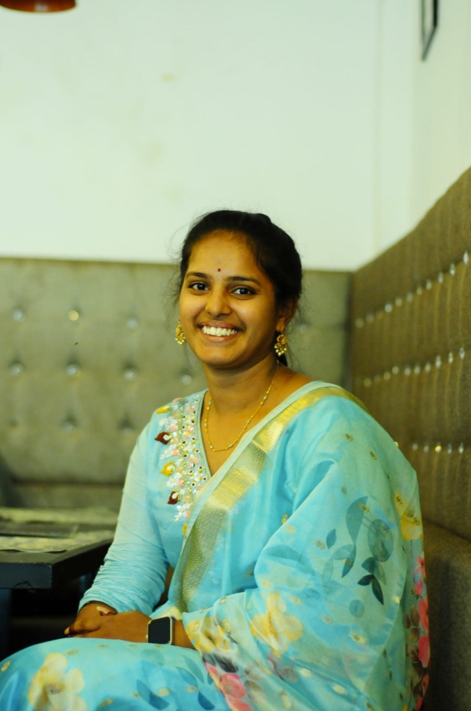

Hello
I'm a passionate full-stack developer and Data analyst with a love
for creativity! Whether it's coding, designing, or exploring new technologies,
I bring ideas to life with a touch of elegance and innovation.
My Skills

Design and Development
I specialize in building seamless, responsive websites with a keen eye for elegant design. Combining coding expertise with creativity, I bring user-friendly and visually appealing experiences to life.
Artistic eye for detail
I have a natural talent for making things aesthetically pleasing, ensuring that every design element aligns perfectly to create a polished and cohesive look.

Empathetic communicator
Beyond tech, I uplift and inspire those around me. Whether it’s offering encouragement, problem-solving, or simply being a good listener, I help people find clarity and confidence.Let's Connect
Passionate about tech and design? Let's collaborate and create something amazing!
Have an idea or just want to chat? Reach out, and let's turn creativity into reality!
CONTACT ME